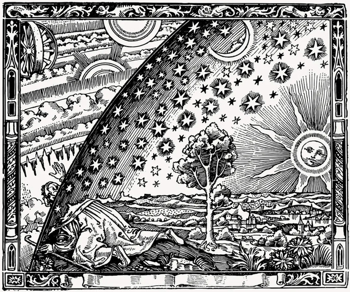

副題：陰謀学の自由度
もうじき期末試験である、何がなんでも単位を取らねば。
親の説教の頻度増加、
外出て煙草でも吸いに行こうか。
(#nicotinekillsnanotech)
＊＊＊
ギター始めて３ヶ月、殆どリフばっかサイクルしてた気がする。
Riff = (reoccurring) motif の略であるという説は納得いく、仮に俗説だろうと。
すなわち、日々の生活に於いて、たびたび精神上に生起する、触覚の描く軌跡を、
Fretboardという6 X 2⬜︎ 行列上の移動に定着させる。。。
最近はネック上の平行移動に対する Interval 保存則を諒解したし、
chordもぼちぼち習得してる、新しい位相 (phase) に遷移しつつある手触りは、
確かにある。
＊＊＊
多少なりとも Catch feelings してしまったから、あの子が Another man
(いや、He can't be a man cause he doesn't smoke the same cigarettes as me
処か、 doesn't even rip darts at all, damn pussy! )と一緒に講義を受けていたのは
不快だった、Jealous boy really feel like John Lennon.
まぁ、所詮オタサーの姫 archetype、
She ain't that special
(I have an Epiphone Casino).
＊＊＊
互いに相反するふたつの極を自らの精神中に所有し、培養してみることー
Rebisを信仰している ’彼ら’ (Them) と同じように。
＊＊＊
陰と陽、Chaos & Order、Masculine & Feminine、
量子力学の訳の分からなさに就いて弁解を求められた際、
Niels Bohrは東洋思想由来の、"As above so below" 染みた神秘的な韜晦に逃げた？
ことを思い出す。少なくとも、マントを翻して smoke screen を張る奇術師に
してやられた印象は受けたものだ。
＊＊＊
「科学」の枠組そのものを疑ってみることー
(今となっては institutionalizedされているよ、かなり)
これをせずとも、いや、疑念を奥にしまい込んで、計算技術を習得し、
近代科学のベースとなる公理 (Axiom) たち、諸 Paradigms を受け入れたら、
あなたはアカデミアの正規軍に参入できよう、
The scientific empire はまた着実に構成員を増やす。
＊＊＊
要するに、今となっては、国家と結びついた、一つの官僚制の機関となってしまった訳だ。
処で、僕がそもそも理系大学生を”やってる”のは、
嘗ての少年時、’自然’ (これには虹も鳥も森も、iPadももちろん含まれるのだが)
に対して素直に驚き、それら事物、現象を総べる根本原理みたいなものを
知りたいと願って、純粋な好奇心に突き動かされたからではなかったのか。
＊＊＊
インスティチューション化されたサイエンスから、
真実の富を奪還するのが、「陰謀学」の目的といえよう。
陰謀論は自由である、何を言っても良いのだー
あなたがそうであると信じているならば、現実は全く以ってその通りなのである。
ここでは、既存の「学派 (school of thought)」、学説は、僕たちを縛る効力を失う。
あらゆる「権威」は、ステータスがリセットされる。
全ての言説は、対等に検証 (consider) される、言った本人が "純粋に" (genuinely)
それを信じているのならば！
陰謀論の射程、
陰謀学の自由度。
＊＊＊
以上、Arthur Oppenheimerの手記から抜粋した。
来週もまた、いくらか、 phrasesをここに書き写していく。
